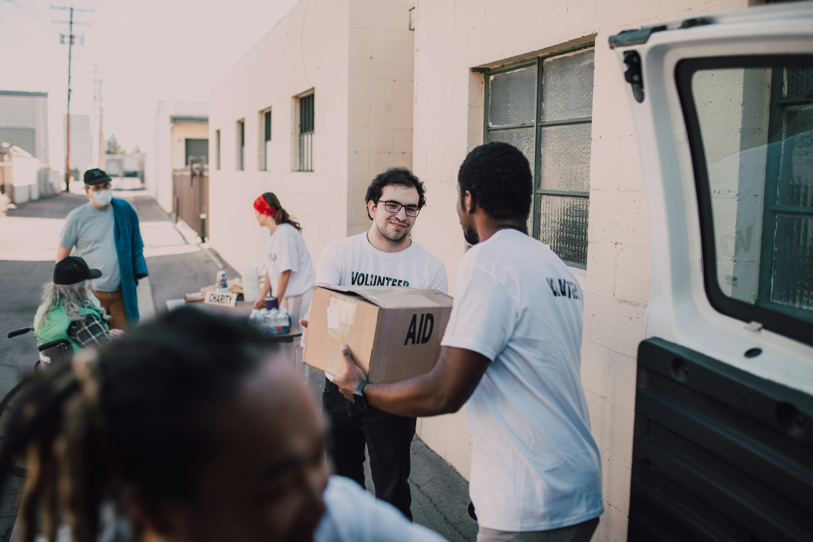

Volunteering with Dinosaur Highlights Museum provides you with the unique opportunity to gain hands on and behind-thescenes access to private collections and even build professional skills like curation or research! We believe in serving our community, and it is a great way to give back to those around you and contribute to our community heritage.
We expect our helpers to be dependable and willing to support our organization with a commitment to a set schedule that we set for you.
To properly engage with and enhance the experience for our visitors and customers, we are always on the look out for those who love to talk to others, have a smile on their face, and have an enthusiasm for learning.
As an institute that supports education and research we hold ourselves to a professional standard. With this in mind we work in a respectful and professional manner. This includes proper appearance and attitude to represent our museum well.
It would be helpful to have someone who has experience of knowledge of volunteering before. This doesnt mean we wont consider you if you dont have any, but if you do you will stand out!
Interested in researching about prehistoric creatures and environments? Come along side our chair researcher and professors, as they uncover mysteries of the archeological pieces we are delivered to curate in our museum.
Have experience cleaning large areas? Want to make an impact on our whole building? Sign up to help us out with janitorial duties.
Want to be a curator? Work along side our chair curators to develop a keen eye for what is necessary for a museum and how to maintain the museums reputation!